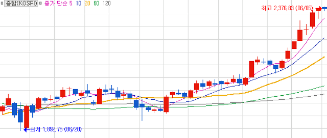
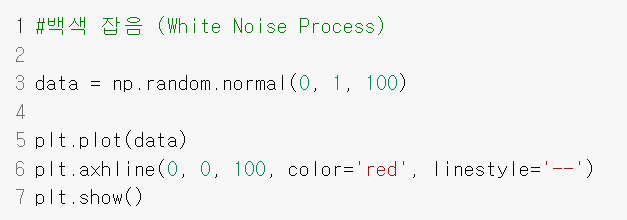
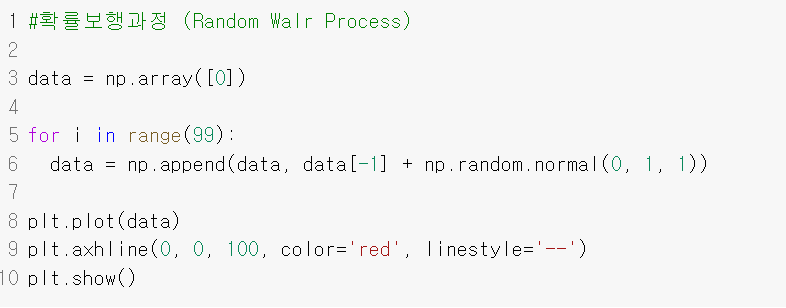
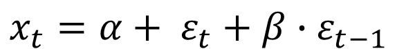
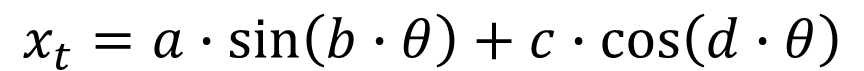
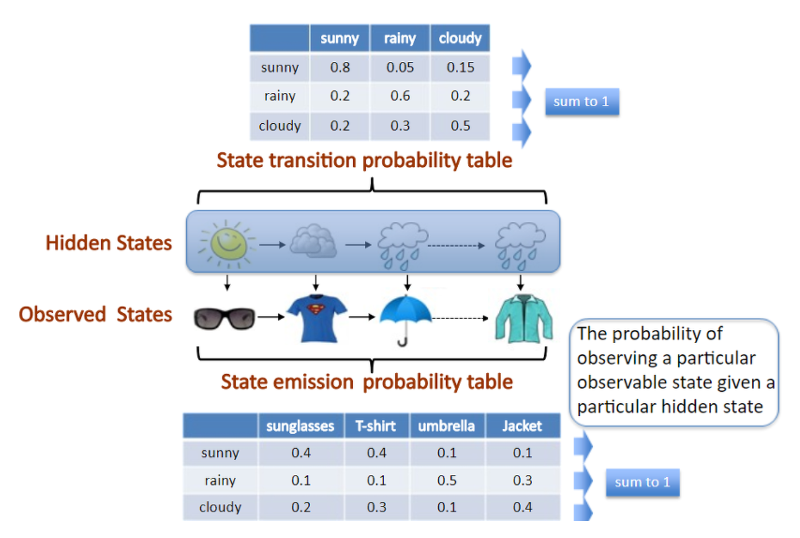
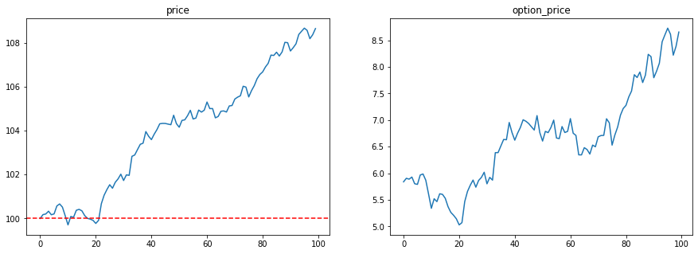
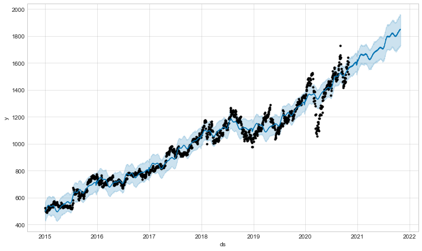

순서가 있는 데이터, 세 걸음
통계에서 신경망으로, 신경망에서 언어로 — 같은 문제를 세 번 푼다.
순서가 있는 데이터는
무엇이 다른가?
시계열은 순서가 있는 데이터다. 지금까지 다룬 데이터에는 없던 순서라는 차원이 하나 더 있다.
시간 단위로 값이 있으면 전부 시계열이다
Time Series Analysis시계열이 처음 다뤄진 자리. 스마트시티 IoT 센서가 그대로 여기다.

가장 많이 연구된 시계열. 오늘 예시의 절반이 여기서 온다.

계절성이 뚜렷한 시계열의 교과서.
도시 쪽이면 인구 추계와 부동산 거래가 바로 이것이다 — 도시기본계획의 계획인구가 시계열 예측 결과다.
백색잡음
White Noise
같은 정규분포에서 뽑은 랜덤값이 그냥 이어진 것. 기억이 없다.


확률보행
Random Walk
data[-1] + 가 붙는다
직전 값에서 랜덤하게 움직인다. 백색잡음은 0에서 움직였다.
정상 확률 과정
대표 시계열 ③ · Stationary Process
평균도 분산도, 떨어진 간격에 따른 관계도 구간마다 같다.
3일 전 값이 영향을 주다가 어느 날부터 6일 전 값이 영향을 주면 — 분석 대상이 아니다.
셋은 같은 식이다
같은 난수 수열로 그렸다 — 다른 건 계수 하나뿐0 을 중심으로만 흔들린다 — 기억이 없다
흘러가되 0 으로 되돌아온다
0 으로 끌어당기는 힘이 없다 — 어디로든 흘러간다
“어디를 잘라도 같다” 를 재 본다
같은 세 계열의 20 구간 이동평균둘이 겹쳐 보일 만큼 0 에 붙어 있다. 어느 구간을 잘라도 평균이 같다.
구간마다 평균이 다르다. 떠내려간다.
ADF 검정이 하는 일이 이 그림을 숫자로 재는 것이고, 다음 장 ARIMA 의 I 가 하는 일이 빨간 선을 파란 선으로 만드는 것이다.
ARIMA (p, d, q)
AutoRegressive Integrated Moving Average · Box–Jenkins 로 정상성 확인 후 사용
몇 시점 전 값까지 끌어오나

정상으로 만들려고 몇 번 차분했나

몇 시점 전 오차까지 끌어오나
계절성을 더하면 SARIMA. 생산 관리·수요 예측에서 지금도 현역이다 — 직관적이기 때문이다.
겹쳐서 만들어진 것은 아닐까
Fourier Transform · 주파수 분석, 음성 인식에 활용


비슷하게 들리면 가까운 자리에 떨어진다
초기 음성 인식이 실제로 한 일이름을 두세 번 녹음시킨 이유가 이것이다 — 덩어리를 만들려고.
남이 같은 말을 해도 다른 자리에 떨어졌다. 뒤에 목소리로 화면 잠금을 푸는 기능까지 나왔다.
한 낱말은 조각 수십 개의 순서다. 그 순서를 다루려고 쓴 것이 다음 장이다.

보이지 않는 상태를
가정한다

학습 대상은 두 개의 표 — 상태 사이의 전이 확률과 그 상태에서 무엇이 보일 확률.
진짜로 “해가 떴다”를 알아내는 게 아니다. 그냥 벡터 숫자로 정한다. 그런데 그것만으로 예측력이 올라갔다.
“어디로 튈지는 몰라도 얼마나 튈지는 안다”
Brownian Motion주가를 확률보행으로 보면, 방향을 못 맞혀도 변동성이 범위 안에 있는 한 가격을 계산할 수 있다.
ELS 는
이 계산이다
단, 아래쪽 기준선 밑으로 내려가면 한 푼도 못 드립니다.
— 그래서 지금 얼마를 받아야 하나?
받은 돈으로 헤지 거래를 한다. 오르면 사고 내리면 판다.
계속 손해 보는 것 같지만, 그래야 어느 쪽으로 가든 약속을 지킬 수 있다.



추세 + 계절 +
휴일
메타가 비즈니스 데이터에 맞게 만든 시계열 예측 라이브러리.
facebook.github.io/prophet

한 시점에
값이 여러 개
아파트 거래는 같은 날 여러 건이 서로 다른 가격으로 발생한다.